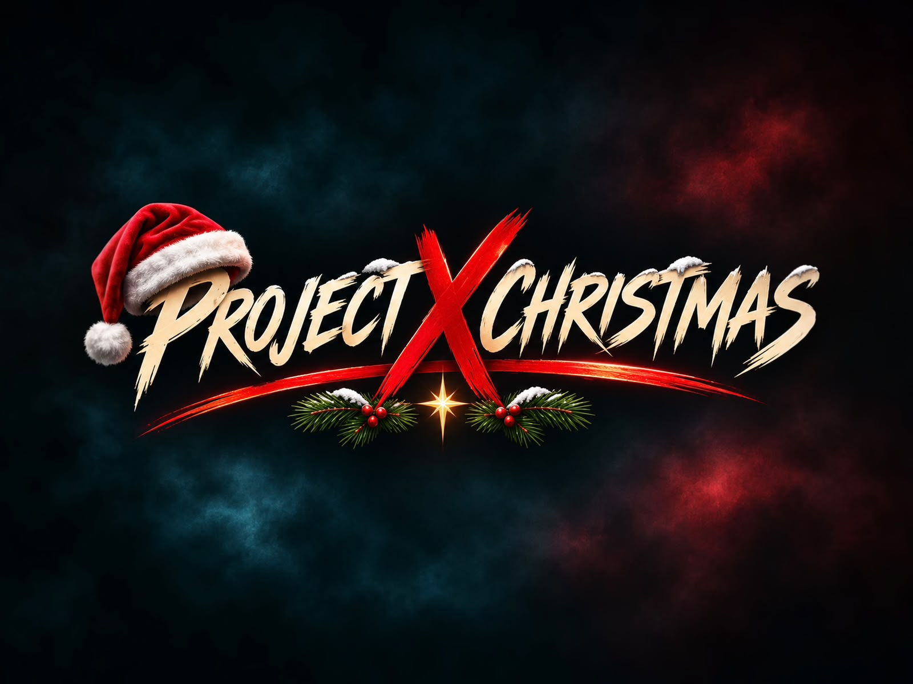
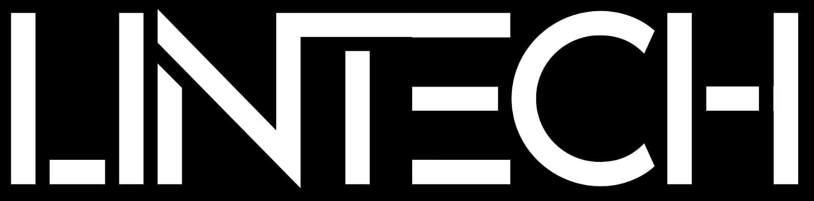
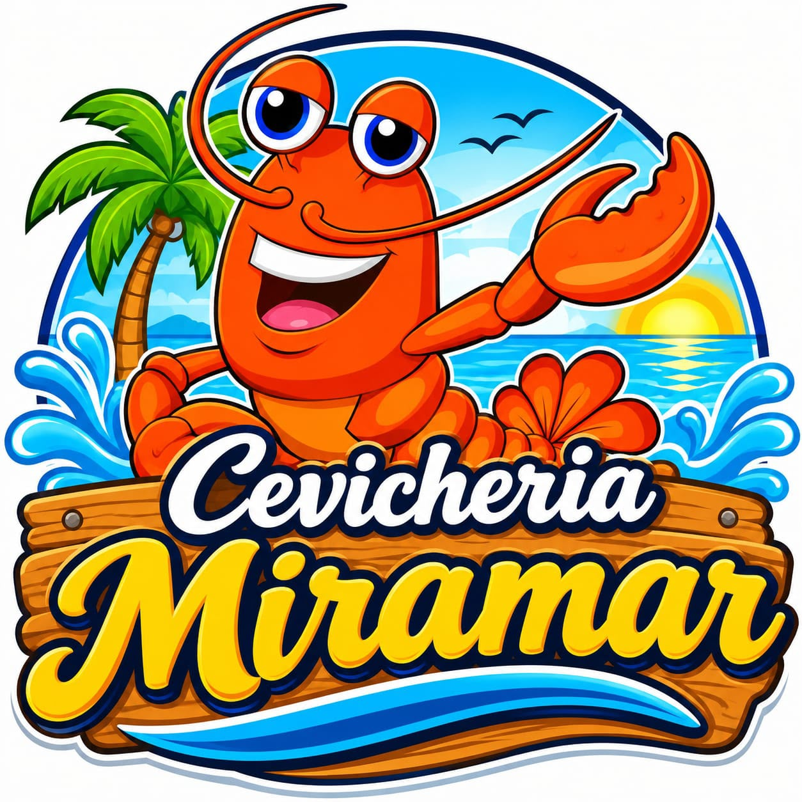

DESDE XELADJ SET
DJ

PRIMERA EDICIÓN · COMITANCILLO, SAN MARCOS
Tu gente. Tu música. Una noche para bailar, conocer personas y vivir algo nuevo en Comitancillo.
Preventa general Q20 · Exclusivo para mayores de 18 años
Instagram · @proyectxchristmasNUESTRA HISTORIA
Somos un grupo de jóvenes que se cansó de viajar lejos para encontrar una buena fiesta.
Creamos Project X Christmas para bailar con amigos, conocer personas y celebrar en Comitancillo. Una nueva experiencia, cerca de casa.
Esta es nuestra primera edición. Aquí comienza nuestra historia.
LA MÚSICA NOS REÚNE
Venta de cócteles para acompañar la noche.
Venta de comida dentro del evento.
Un stand de fotos para capturar el momento.
Audio profesional, seguridad y parqueo dentro del recinto.
ELIGE TU EXPERIENCIA
Reserva directamente con el equipo
por WhatsApp al 5125 0103.
GENERAL · PREVENTA
Para quienes vienen a bailar y vivir la música de pie, en la zona general.
General el día del evento: Q30.
ZONA VIP
Disfruta la noche desde la zona de mesas VIP y comparte el plan con tu grupo.
Antes de pagar, consulta qué incluye Q40, asiento y asignación de mesas.
General o VIP. Decide cuántos brazaletes necesitas.
Confirma disponibilidad, condiciones y datos de pago con el equipo.
Después del pago, solicita la confirmación y acuerda la entrega de tus brazaletes.
La reserva y el pago se coordinan por WhatsApp. Abrir el chat no confirma tu entrada. Alimentos y bebidas se compran por separado.
CONOCE EL ESPACIO
Ubica la pista, las mesas VIP, el escenario y las áreas de comida, cócteles y servicios antes de llegar.
De pie, para disfrutar la pista.
Área de mesas para compartir la noche.
NOS VEMOS AQUÍ
Salón Magisterial, Comitancillo, San Marcos.
Junto al CAP y frente al Estadio Santa Cruz.
ANTES DE VENIR
El evento es exclusivo para mayores de 18 años.
Escríbenos al WhatsApp 5125 0103 e indica si deseas general o VIP y cuántos brazaletes necesitas. El equipo te indicará disponibilidad y cómo realizar el pago. Se acepta transferencia bancaria; solicita los datos directamente al equipo.
No se permite ingresar alimentos, bebidas, termos ni pachones. Dentro del evento habrá venta de comida y cócteles.
No se permite ingresar armas de fuego, objetos cortopunzantes, cascos, mochilas grandes, paraguas, mascotas, ventiladores portátiles, termos o pachones, palos para selfies o trípodes, laptops o tablets, comida o bebidas, drogas o estupefacientes, cámaras profesionales, cámaras Polaroid, videocámaras, instrumentos musicales, láseres o punteros, sustancias inflamables, aerosoles o sprays.
Las cajetillas de cigarros deben estar selladas. La organización no se hace responsable por la pérdida o daño de objetos personales o de valor.
La zona VIP está en el área de mesas del croquis. Antes de pagar, confirma por WhatsApp si Q40 corresponde a una persona, si incluye asiento y cómo se asignan las mesas para tu grupo.
LA PRIMERA EDICIÓN SE VIVE UNA SOLA VEZ
19 de diciembre · Comitancillo · +18
Anuncios y novedades en @proyectxchristmasQUIENES SE SUMAN A LA PRIMERA EDICIÓN

Colaborador de Project X Christmas

Colaborador de Project X Christmas
Gracias por apoyar una nueva experiencia en Comitancillo.